.jpg)

este link te llebara a tu respuesta...
PARQUES
ACUATICOS
San Carlos
Consolidarnos como el parque acuático más importante del estado, prestando servicios de calidad, con instalaciones a la vanguardia y con la más alta seguridad para que su diversión no se limite, comprometidos con la higiene y con una atención al cliente de primera, garantizando siempre que su estancia en el día o en la noche sea una experiencia agradable.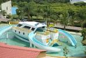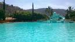
este link te llebara a mas informacion...
Laguna De San Juan Epatlan
Este es un lugar lejendario ya que es este sitio se cuenta sobre una leyenda de una sirena ... lo cual lo ase mas atractivo no te puedes ir sin visitar este lugar aparte de admirar la laguna coin todas sus fantasticas historias ... Asi mismo puedes disfrutar de comida tipica de estos lugares.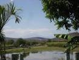
 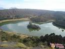
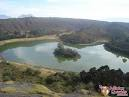
PARQUES DEL CENTRO DE LA CUIDAD
PARQUE PAVON
Estos parques se encuentran situados en el
centro de la ciudad de izucar de matamoros
en estos podres encontrar atracciones dependiendo
las fechas tradicionakles de este lugar,comida tipica
dentro del famoso "tianguillo",centros comerciales y
arquitecturas.
 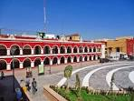
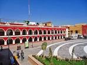
ZOCALO DE LA CUIDAD
En este hermiso lugar podrar adquirir recuerdos de este lugar, disfrutar de los platillos, admirar los famosos arcos situados al inico de este lugar, bares, retaurantes,boutiques etc.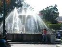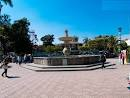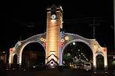 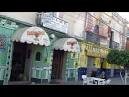
RESTAURANTES
Para una mejor informacion de r estaurantes aquí te dejamos una guía para disfrutar de las horas de comida
da click para ver opciones de restaurantes
Centros Religiosos
si lo que buscas es algo mas antiguo, conservador y
mas cultura deveras conocer los templos, capillas,
ex conventos e iglecias historicos, fantantasticos y
llenos de historias, mitos, y leyendas de este lugar
si gustas saber mas acerca de esta cuidad te sugerimos la siguiente pagina y extenderte mas sobre estos lugares